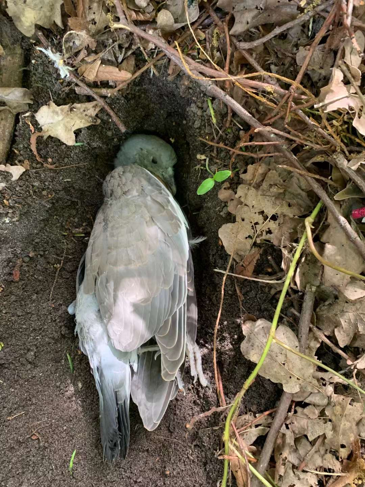

These unique encounters became a way of social support and validation. Sound as an omnipresent and uncloseable source of vibrations, reconnects humans with the rhythms and cycles of nature, and in a sense, promotes a deeper understanding and appreciation of the interconnectedness of living beings.
These unique encounters became a way of social support and validation. Sound as an omnipresent and uncloseable source of vibrations, reconnects humans with the rhythms and cycles of nature, and in a sense, promotes a deeper understanding and appreciation of the interconnectedness of living beings. These unique encounters became a way of social support and validation. Sound as an omnipresent and uncloseable source of vibrations, reconnects humans with the rhythms and cycles of nature, and in a sense, promotes a deeper understanding and appreciation of the interconnectedness of living beings.
These unique encounters became a way of social support and validation. Sound as an omnipresent and uncloseable source of vibrations, reconnects humans with the rhythms and cycles of nature, and in a sense, promotes a deeper understanding and appreciation of the interconnectedness of living beings.

sound installation/event
2023, Rotterdam
These unique encounters became a way of social support and validation. Sound as an omnipresent and uncloseable source of vibrations, reconnects humans with the rhythms and cycles of nature, and in a sense, promotes a deeper understanding and appreciation of the interconnectedness of living beings.
These unique encounters became a way of social support and validation. Sound as an omnipresent and uncloseable source of vibrations, reconnects humans with the rhythms and cycles of nature, and in a sense, promotes a deeper understanding and appreciation of the interconnectedness of living beings. These unique encounters became a way of social support and validation. Sound as an omnipresent and uncloseable source of vibrations, reconnects humans with the rhythms and cycles of nature, and in a sense, promotes a deeper understanding and appreciation of the interconnectedness of living beings.
These unique encounters became a way of social support and validation. Sound as an omnipresent and uncloseable source of vibrations, reconnects humans with the rhythms and cycles of nature, and in a sense, promotes a deeper understanding and appreciation of the interconnectedness of living beings.
在第一次网络空间繁荣的周期性衰竭之后,整个资本主义世界迎来了人造寒冬。投资者的"动物精神"退却,阴界的阴影蠢蠢欲动。需求管理的高级魔术师们试图阻止新经济滑向黑暗,但为时已晚。就在阴影越来越浓的时候,一些难以想象的东西正从世界的边缘涌来。